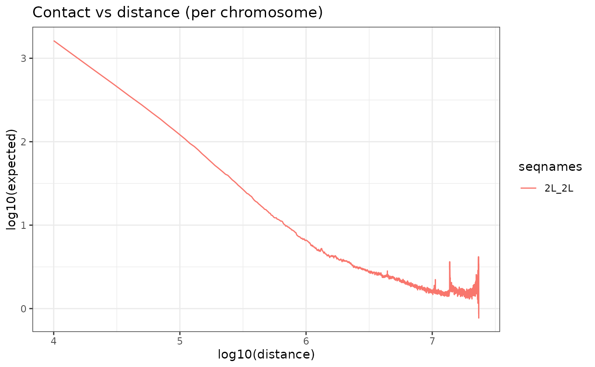

Computes z.test for each target couple over background couples.
Usage
CompareToBackground(
hicList = NULL,
matrices = NULL,
indexAnchor = NULL,
indexBait = NULL,
genomicConstraint = NULL,
secondaryConst.var = NULL,
chromSizes = NULL,
n_background = NULL,
areaFun = "center",
operationFun = "mean",
bg_type = NULL,
cores = 1,
verbose = FALSE,
p_adj_method = "BH",
...
)Arguments
- hicList
<ListContactMatrix>: The HiC maps list.
- matrices
<listmatrix>: The matrices list.
- indexAnchor
: A first indexed GRanges object used as pairs anchor (must be indexed using IndexFeatures()).- indexBait
: A second indexed GRanges object used as pairs bait (must be indexed using IndexFeatures()).- genomicConstraint
: GRanges object of constraint regions. If NULL, chromosomes in chromSizes are used as constraints (Default NULL)- secondaryConst.var
: A string defining column name containing compartment information in the metadata of anchor and bait objects. (Default NULL) - chromSizes
<data.frame>: A data.frame containing chromosomes names and lengths in base pairs.
- n_background
: Number of background couples to keep. We recommend to use set.seedprior to launching this function with non null n_background. (Default NULL)- areaFun
: A character or function that allows to extract an area from each matrix that composes the matrices list (Default "center"). Look at GetQuantif for more info. - operationFun
: A character or function specifying the operation applied to the selected area. (Default "mean"). Look at GetQuantif for more info. - bg_type
: Type of background couples to generate. Possible choices: "random_anchors", "inter_TAD", "inter_compartment", NULL (Defaults to "random_anchors"). More information in details... - cores
: Number of cores used. (Default 1) - verbose
details on progress? (Default: FALSE) - p_adj_method
method used to adjust p.values. More from stats::p.adjust(). (Default: "BH")- ...
arguments to pass to PrepareMtxList, inorder to treat background matrices.
Value
returns a object with the z.test output for each
target couple, values for the target couples and values for the
background couples.
Details
Types of background couples possible:
"random_anchors": picks random bins as anchors and forms couples with bait bins. If genomicConstraint is supplied, only intra-TAD random-bait couples are kept. Else intra-TAD random-bait couples within a distance constraint corresponding to the minimal and maximal distances of target couples.
"inter_TAD": If target couples were formed using TAD information with non
NULLgenomicConstraint argument, then inter-TAD anchor-bait couples are used as background. Distance constraint applied correspond to the minimal distance of target couples and maximal width of supplied TADs."inter_compartment": If
secondaryConst.varis notNULLand both indexAnchor and indexBait objects contain the provided variable name, then background couples are formed between anchors and baits located in different compartments."NULL": If
NULL,random_anchorsare set by default.
Notes on the comparison between bg and target couples: We noticed that o/e values tend to be skewed towards very long distance interactions. As a result, long distance background couples tend to influence strongly mean and sd, resulting in more long distance target couples being significant. So rather than computing z.score over all background couples, we've chosen to fit a polynomial with 2 degrees on the log(counts) vs distance data of the background couples. Z.scores are then computed per target couple by comparing residuals of the target counts as predicted by the model and the residuals of the background couples.
Examples
h5_path <- system.file("extdata",
"Control_HIC_10k_2L.h5",
package = "HicAggR", mustWork = TRUE
)
binSize=10000
data(Beaf32_Peaks.gnr)
data(TADs_Domains.gnr)
hicLst <- ImportHiC(
file = h5_path,
hicResolution = binSize,
chromSizes = data.frame(seqnames = c("2L"),
seqlengths = c(23513712)),
chrom_1 = c("2L")
)
hicLst <- BalanceHiC(hicLst)
hicLst <- OverExpectedHiC(hicLst)

# Index Beaf32
Beaf32_Index.gnr <- IndexFeatures(
gRangeList = list(Beaf = Beaf32_Peaks.gnr),
chromSizes = data.frame(seqnames = c("2L"),
seqlengths = c(23513712)),
genomicConstraint = TADs_Domains.gnr,
binSize = binSize
)
Beaf_Beaf.gni <- SearchPairs(indexAnchor = Beaf32_Index.gnr)
interactions_Ctrl.mtx_lst <- ExtractSubmatrix(
genomicFeature = Beaf_Beaf.gni,
hicLst = hicLst,
referencePoint = "pf"
)
interactions_Ctrl.mtx_lst <- PrepareMtxList(
matrices = interactions_Ctrl.mtx_lst
)
output_bgInterTAD = CompareToBackground(hicList = hicLst,
matrices = interactions_Ctrl.mtx_lst,
indexAnchor = Beaf32_Index.gnr,
indexBait = Beaf32_Index.gnr,
genomicConstraint = TADs_Domains.gnr,
chromSizes = data.frame(seqnames = c("2L"),
seqlengths = c(23513712)),
bg_type="inter_TAD"
)